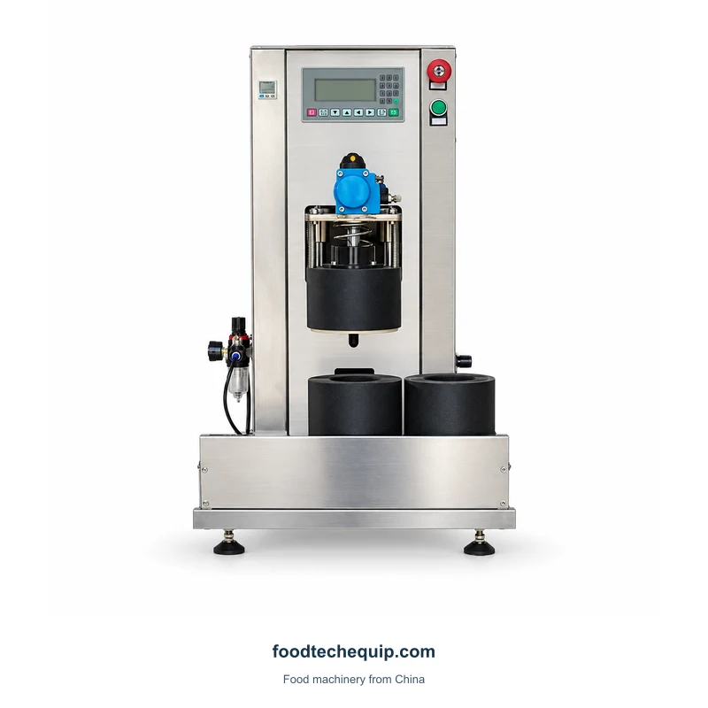

機器カテゴリ
ガラス瓶真空キャッピング機
ガラス瓶真空キャッピング機は、瓶口とキャップの適合性、各ステーションでの瓶のセットと取り出し手順で比較します。検討する構成の電気仕様は各製品ページで確認できます。


ガラス瓶の真空キャッピング
ガラス瓶真空キャッピング機 2・4ステーション仕様（2ステーション 0.5 kW）
定格電圧220 Vのガラス瓶真空キャッピング機です。定格電力は2ステーション仕様が0.5 kW、4ステーション仕様が0.9 kWです。
機器を見る


ガラス瓶の真空キャッピング
ガラス瓶真空キャッピング機 2・4ステーション仕様（2ステーション 1.2 kW）
2・4ステーション仕様のガラス瓶真空キャッピング機です。2ステーション仕様は定格電力1.2 kW、定格電圧220 Vです。
機器を見る
一致する機器がありません
別のキーワードを入力したり、フィルタをクリアしてください。
選択に関する考慮事項
適合する容器、蓋、密封装置 ↗瓶とキャップに合う機種の選定
組み合わせて使う瓶とキャップをご提示ください。瓶口の寸法、ライナーまたはパッキンもお知らせいただくと、封栓仕様を検討できます。
瓶の供給手順、希望するステーション構成、目標とする封栓状態をお知らせください。封栓後の確認方法もご提示ください。
真空キャッピング機の比較項目
| 選択エリア | 比較項目 | 何を提供するか |
|---|---|---|
| 瓶口形状 | 瓶口と適合するキャップ | 組み合わせて使う瓶とキャップ |
| 駅構造 | ロードおよびアンロード シーケンス | 選択されたステーション エントリとオペレータ タスク |
| 終了結果 | 封栓後の確認方法 | ライナーまたはガスケットと評価方法 |
このタスクがプロセスに適合する場所
瓶口形状と適合するキャップ、目標とする封栓状態、瓶の供給手順をご提示ください。ボトル用キャッピング機も、工程で使用する容器とキャップの組み合わせで比較します。